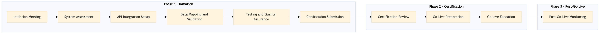

This process document outlines the steps for onboarding and certifying an airline using the NDC API with Expedia Group's OTA systems and Amex GBT / SAP Concur TMC.
| Trigger | A new airline partnership is initiated by either Expedia Group or Amex GBT / SAP Concur, requiring integration via the NDC API. |
| Outcome | The airline is successfully integrated into all relevant OTA and TMC systems, with full functionality and certification achieved. |
| Systems | Expedia Open World Partner Central Amadeus NDC Sabre GDS Travelport EVC One Key TravelAds AWS SageMaker Snowflake Kafka Salesforce Tableau SAP Concur T2 SAP Concur Expense Amex GBT Neo/Complete Amadeus GDS SAP S/4HANA International SOS Cvent Amex Corporate Card VCN SAP Analytics Cloud Workday |

Click to enlarge
| Step | Name & Pain Point | Role | System | Input | Output | KPI | Flags |
|---|---|---|---|---|---|---|---|
| 1.1 | Initiation Meeting Coordination with multiple stakeholders | Project Manager | Partner Central | Partnership proposal | Onboarding plan | Meeting completion within 2 weeks | ⚠ Exception |
| 1.2 | System Assessment Technical integration challenges | Technical Lead | AWS SageMaker, Snowflake | Airline technical specifications | Compatibility report | Report completion within 3 weeks | ◆ Decision |
| 1.3 | API Integration Setup API version mismatches | Developer | Amadeus NDC, Sabre GDS, Travelport, EVC, One Key, TravelAds | Compatibility report | Integrated API endpoints | Integration completed within 4 weeks | ⚠ Exception |
| 1.4 | Data Mapping and Validation Data consistency issues | Data Analyst | Kafka, Salesforce, Tableau | Integrated API endpoints | Validated data mappings | Validation completed within 5 weeks | ◆ Decision |
| 1.5 | Testing and Quality Assurance Functional testing errors | QA Engineer | Expedia Open World, Partner Central | Validated data mappings | Test results | Tests passed within 6 weeks | ⚠ Exception |
| 1.6 | Certification Submission Documentation errors | Project Manager | SAP Concur T2, SAP Concur Expense, Amex GBT Neo/Complete | Test results | Certification request | Submission completed within 7 weeks | ◆ Decision |
| 1.7 | Certification Review Complexity of certification criteria | Certification Officer | SAP S/4HANA, International SOS, Cvent | Certification request | Certification approval or rejection | Review completed within 8 weeks | ⚠ Exception |
| 1.8 | Go-Live Preparation Resource allocation | Project Manager | Amex Corporate Card, VCN, SAP Analytics Cloud | Certification approval | Go-live plan | Plan completed within 9 weeks | ◆ Decision |
| 1.9 | Go-Live Execution Operational disruptions | Operations Team | Workday, Expedia Open World | Go-live plan | Live integration | Integration live within 10 weeks | ⚠ Exception |
| 1.10 | Post-Go-Live Monitoring Continuous monitoring challenges | Monitoring Team | AWS SageMaker, Snowflake | Live integration | Performance metrics | Stable operation within 12 weeks | ◆ Decision |